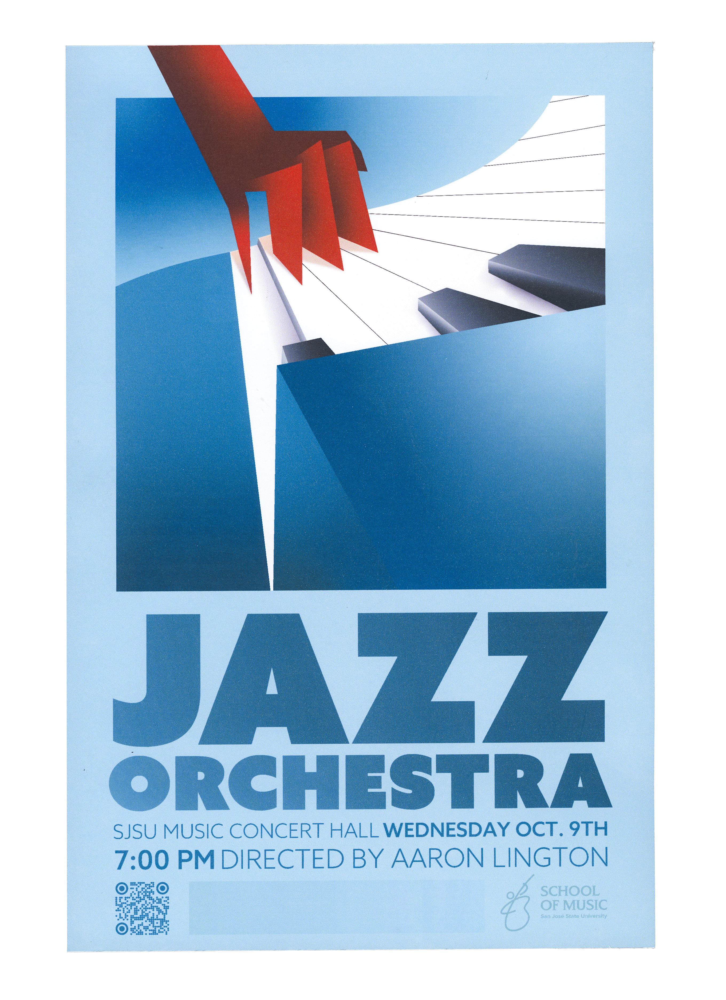
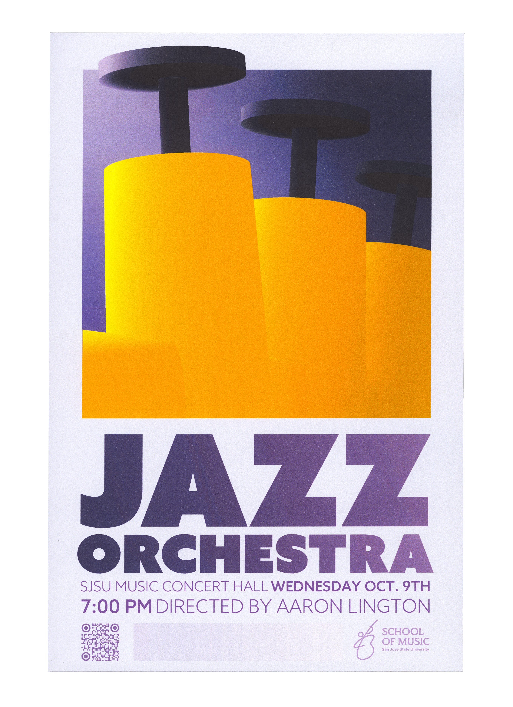
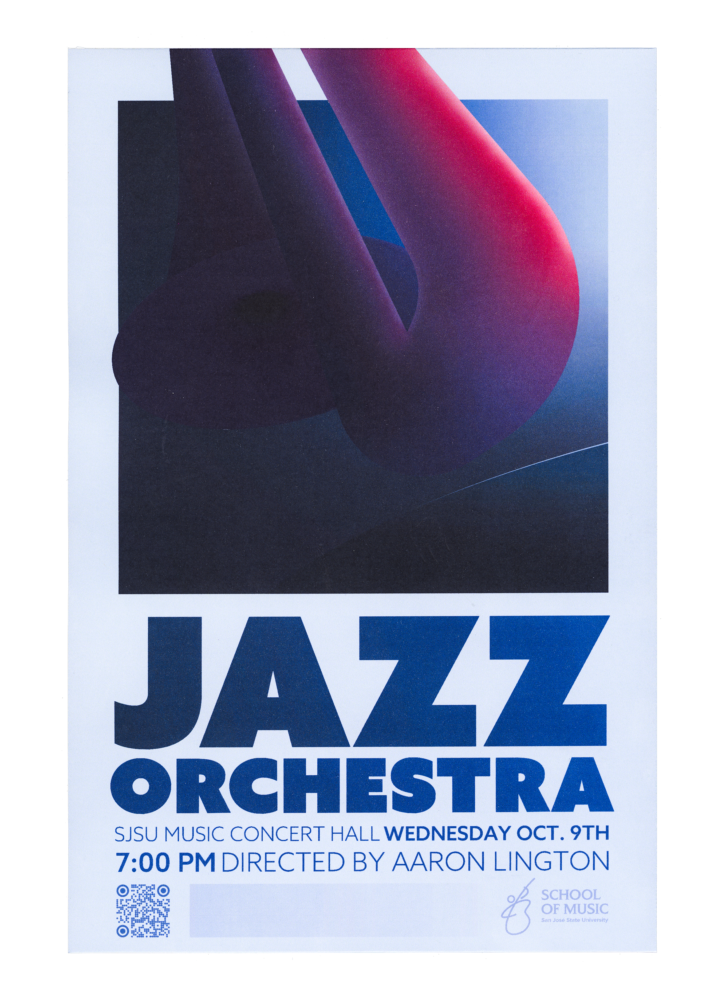

JAZZ ORCHESTRA
Completed as a promotional piece for SJSU’s School of Music’s Jazz Orchestra, this poster series takes three instruments used prominently in jazz—piano, trumpet, and trombone— and renders them in a mix of Art Deco and modern stylizations.
The bright, contrasting colors attract attention and reflect the colorful cast of sounds and rhythms that star in jazz compositions, while the dynamic perspective and frame-breaking capture both the kinetic and mould-breaking nature of Jazz.





